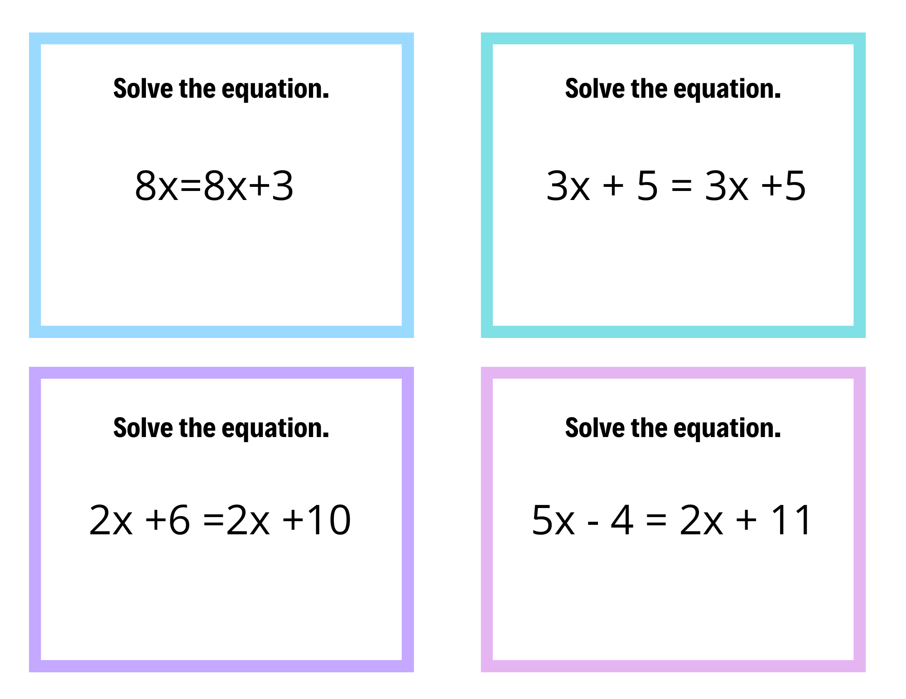

Grace Dittman
Student Teaching Portfolio
Block 2 Math
Block 3 Math
ESS
Lesson Plans
Résumé
Search
Home
›
Block 3 Math
›
Week 9
›
Activities
›
Variables on Both Sides: Special Cases Warm-Up
Variables on Both Sides: Special Cases Warm-Up
VBSSpecialCasesWarm-Up.png
← Variables on Both Sides Homework Key
Open full size

Lesson plans from the same week
Distributive Property & Variables on Both Sides
10/23, 10/26
Variables on Both Sides & Multistep Equations
10/27, 10/28
Multistep Equations Color-by-Number
10/29, 10/30
← Variables on Both Sides Homework Key